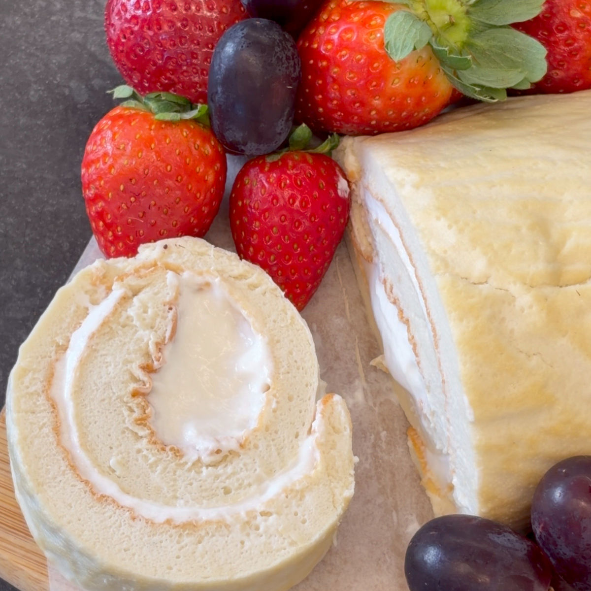
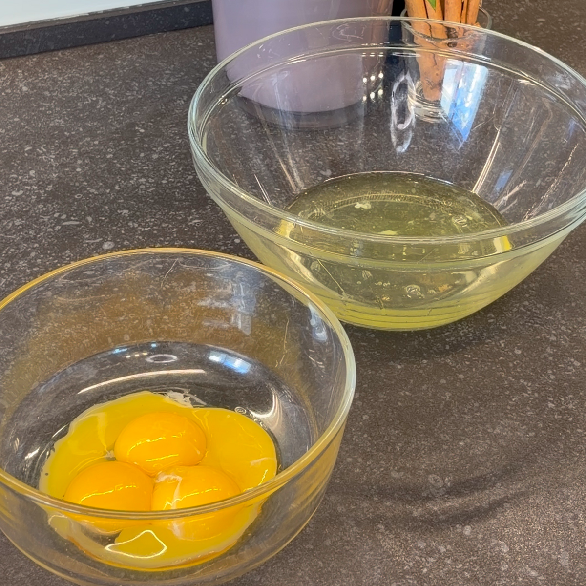
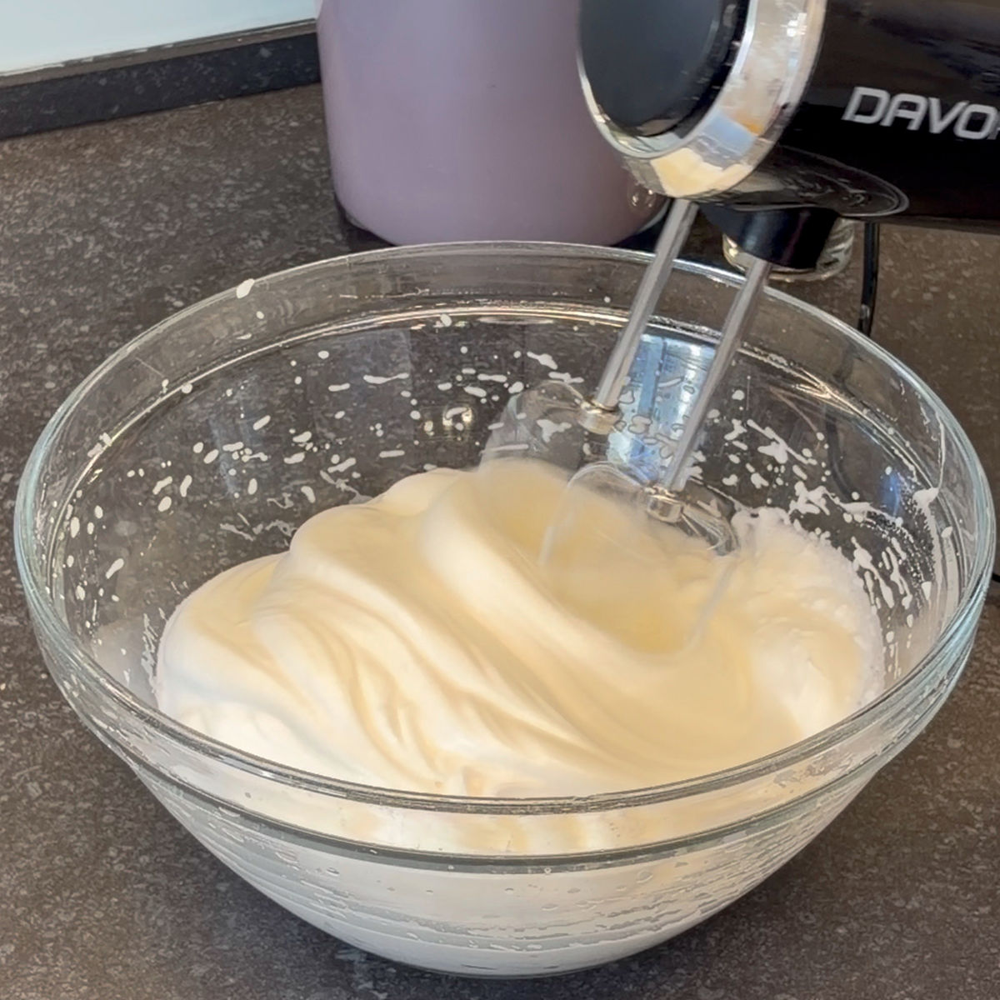
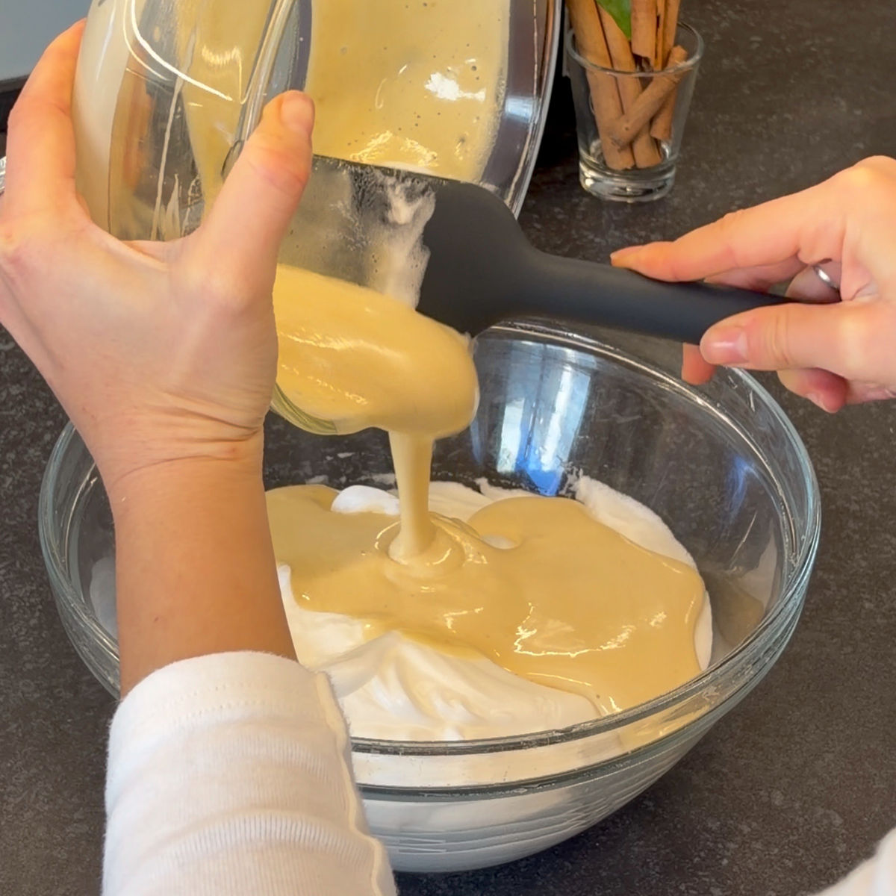
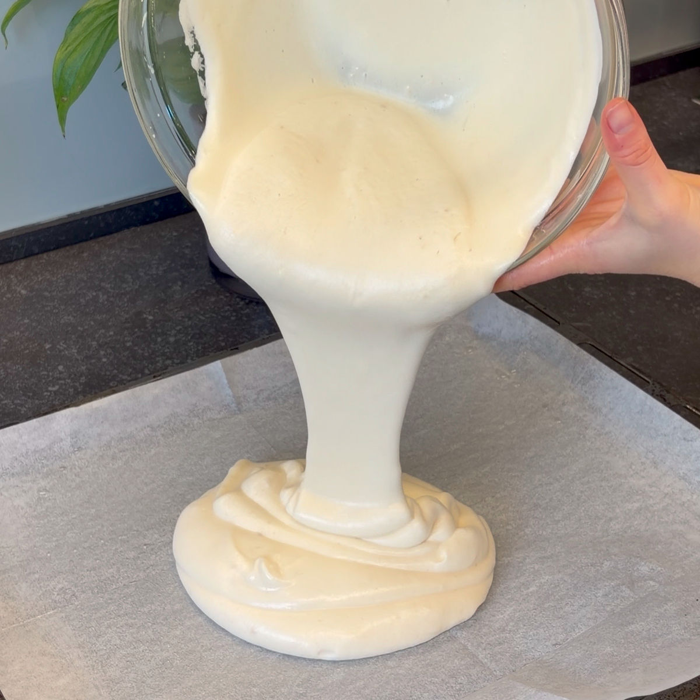
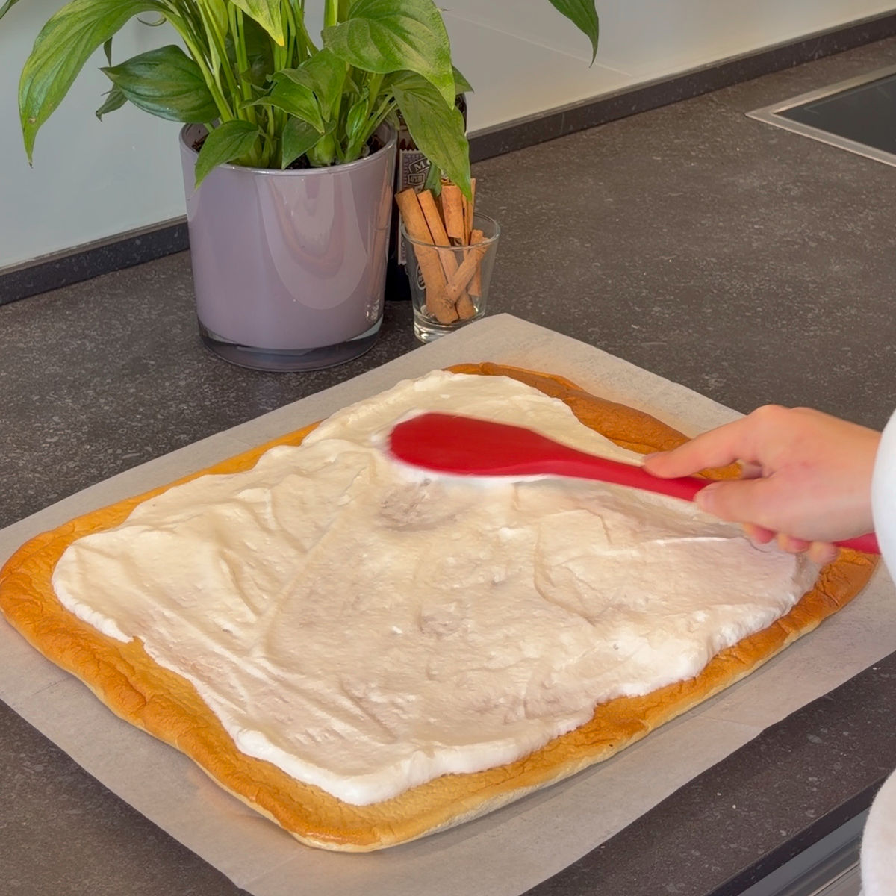
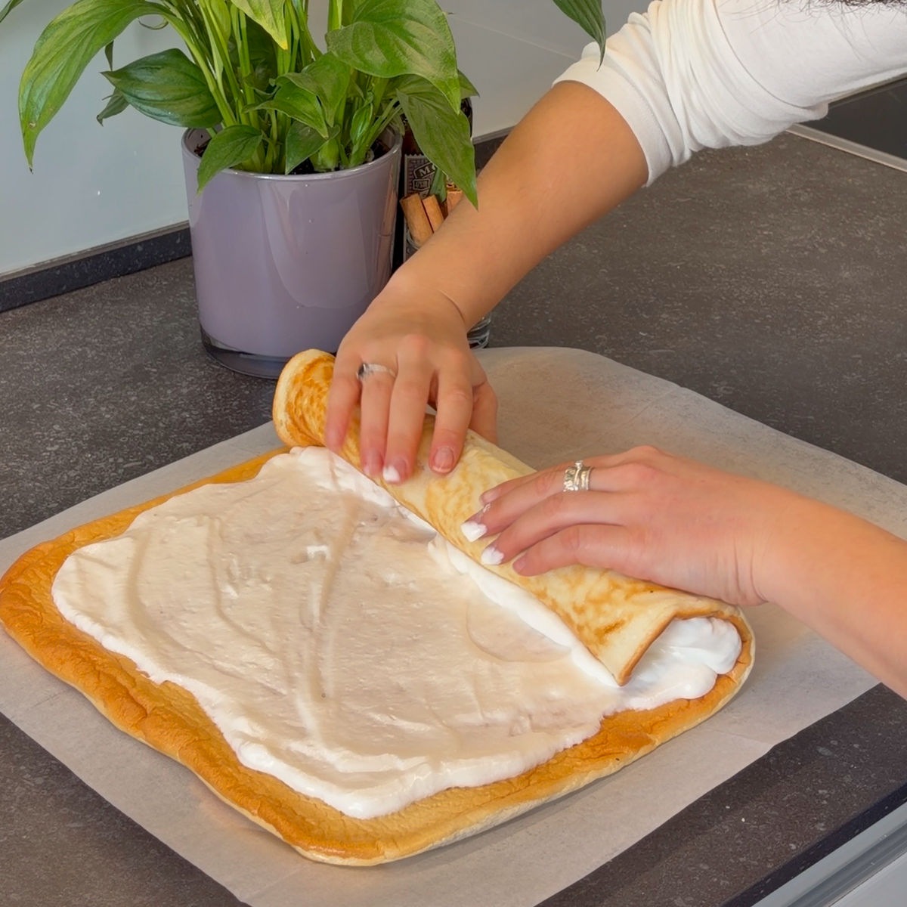

רולדה עננים
עודכן: 22 באפר׳
טבלת ערכים תזונתיים בקירוב:
שימו לב שזו טבלה עבור רולדה עם קרם דל קלוריות, ממתיק סוויטאנגו וקמח שקדים (קמח עם 9.1 גרם פחמימה ל100 גרם), אבקת חלבון במקום קמח שקדים תוריד את כמות הקלוריות ותעלה את כמות החלבון במתכון.
| ערכים | פרוסה (55 גרם) | 100 גרם |
|---|---|---|
| קלוריות | 80 | 145 |
| פחמימות | 1.32 | 2.4 |
| חלבונים | 6.16 | 11.2 |
רולדה היא אחת העוגות האהובות ביותר על בן הזוג שלי, והמתכון הספציפי הזה נולד בדרך הכי לא צפויה שיש. בטיול שלנו ביפן, זרקתי לו באחד הבקרים: "תגיד, מה יקרה אם אשתמש במתכון של הפנקייקים שלי כדי להכין עוגה?".
כשחזרנו לארץ החלטתי לפתח את הרעיון, ואחרי כמה ניסיונות במטבח ודיוק של המרקם – הפכתי את הבלילה לבצק רולדה מושלם. התוצאה? עוגה אוורירית כמו ענן, דלה בקלוריות וכל כך קלילה; אני בטוחה שאחרי שתכינו אותה פעם אחת, היא עומדת להפוך לאורחת קבועה אצלכם במזווה.
למה אני מוסיפה חומץ לקציפת הביצים?
בפעם הראשונה שנתקלתי בטיפ הזה גם אני הופתעתי, אבל התוצאה פשוט ניצחה.
עובדה חמודה למטבח: החומץ פועל כ"דבק" מדעי לחלבונים. הוא משנה מעט את המבנה של חלבון הביצה ועוזר לו להיקשר בצורה חזקה וגמישה יותר. התוצאה היא קציפה יציבה להפליא שלא "נשברת" בקלות, ושומרת על כל האוויר שנכנס פנימה. אל דאגה – הטעם של החומץ נעלם לחלוטין באפייה, ונשאר רק מרקם של ענן!

המתכון:
כמות: רולדה קצת יותר ארוכה מתבנית אנגליש קייק
מרכיבים:
עוגה:
4 ביצים
30 גרם סוויטאנגו \ 40 גרם דבש (שימו לב: דבש אינו מתאים לסוכרתיים ולקיטוגנים)
כפית חומץ
כפית תמצית וניל
30 גרם קמח שקדים \ 20 גרם אבקת חלבון - שימו לב! אם אבקת החלבון שלכם ממותקת יש להפחית בכמות הסוויטאנגו או הדבש
2 כפות חלב רגיל או צמחי כמו שקדים (30 מ"ל) \ 3 כפות אם משתמשים באבקת חלבון
*בחרו איזה קרם תרצו עשיר בשומן או דל קלוריות*
אופציה א': קרם דל קלוריות
1 חלבון מביצה L (כ36 גרם)
100 גרם גבינה לבנה
50 גרם יוגורט פרו
1/2 (חצי) כפית מיץ לימון
1 כפית תמצית וניל
30 גרם סוויטאנגו \ 40 גרם דבש
אופציה ב': קרם עשיר בשומן
200 מל שמנת להקצפה
1 כפית תמצית וניל
22 גרם סוויטאנגו \ 30 גרם דבש
הוראות הכנה:
העוגה:
חממו תנור מראש ל-170 מעלות במצב טורבו.
הפרידו את הביצים לחלבונים וחלמונים. שימו לב שלא יחדור חלמון לקערת החלבונים.
הוסיפו לקערת המיקסר את החלבונים, הממתיק (סוויטאנגו או דבש), החומץ ותמצית הווניל. הקציפו במהירות גבוהה עד לקבלת קציפה יציבה מאוד.
בזמן הזה, ערבבו בקערה נפרדת את החלמונים עם קמח השקדים (או אבקת החלבון) והחלב. ערבבו היטב עד לקבלת תערובת חלקה ללא גושים.
הוסיפו כף מקציפת החלבונים אל תערובת החלמונים וערבבו היטב. המטרה היא להפוך את תערובת החלמונים לאוורירית יותר, כדי שלא "תפיל" את הקציפה בשלב הבא.
הוסיפו את תערובת החלמונים לקערת החלבונים וקפלו בעדינות עד לקבלת בלילה אחידה ואוורירית. הימנעו מערבוב יתר כדי שהבלילה לא תאבד מהנפח שלה.
רפדו תבנית תנור בנייר אפייה ושמנו אותו היטב (בשמן קוקוס, חמאה או שמן ניטרלי). שלב השימון קריטי לחילוץ קל של הרולדה מנייר האפייה.
שפכו את הבלילה על נייר האפייה ופזרו אותה בשכבה אחידה על פני המגש.
אפו במשך כ-8 דקות (עד שהחלק העליון מקבל גוון חום). לאחר מכן כבו את התנור, פתחו רווח קטן בדלת והשאירו את העוגה בפנים למשך כ-2 דקות נוספות.
הוציאו את העוגה וחכו שתתקרר לחלוטין לטמפרטורת החדר. זהו שלב חשוב במיוחד כדי שהעוגה לא תיקרע בזמן השחרור מהנייר. בזמן שהעוגה מתקררת, הכינו את הקרם שבחרתם (דל קלוריות או עשיר בשומן).
אופציה א' : קרם דל קלוריות
הקציפו את חלבון הביצה עם ממתיק, מיץ לימון ותמצית וניל עד לקבלת קצפת יציבה מאוד.
בקערה נפרדת ערבבו יוגורט פרו עם גבינה לבנה. הוסיפו לתערובת הגבינה כף מקציפת החלבונים וערבבו קלות.
העבירו את תערובת הגבינות לקערת קציפת החלבונים וקפלו בעדינות עד לאיחוד.
אופציה ב' : קרם עשיר בשומן
הקציפו שמנת מתוקה עם הממתיק ותמצית וניל. הקציפו עד לקבלת קצפת יציבה והימנעו מהקצפת יתר כדי שהשמנת לא תהפוך לגושית.
הרכבה:
קחו את העוגה (היא תהיה דבוקה קלות לנייר), הפכו אותה על משטח נקי ונתקו את נייר האפייה לאט ובעדינות.
הפכו שוב את הרולדה כך שהצד שנאפה כלפי מעלה יהיה זה שעליו תמרחו את הקרם.
מרחו את הקרם בצורה אחידה על גבי העוגה וגלגלו את הרולדה בצורה הדוקה ככל הניתן.
הערות:
ניתן להוסיף מעל הקרם גם ריבת פירות יער בהכנה ביתית, יש לי פה באתר מתכון לכמה ריבות דלות בקלוריות ובפחמימות :
ריבות שונות מפירות יער בפחות מ-30 דקות
לאחר קירור הריבה מרחו אותה על הקרם וגלגלו את הרולדה.
שימו לב המתכון מכיל חלבון ביצה נא (כמו בקינוחים רבים אחרים, מרנג לפאי לימון, טרמיסו, מוס קלאסי וכו'), לתשומת לבכם.
סרטון מתהליך ההכנה:
לינק לסרטון קצר
תמונות מתהליך ההכנה:

הפרדת חלבונים וחלמונים

הקצפת החלבונים

ערבוב בלילת החלמונים והחלבונים

העברת הבלילה למגש

מריחת הקרם על הרולדה האפויה

גלגול הרולדה